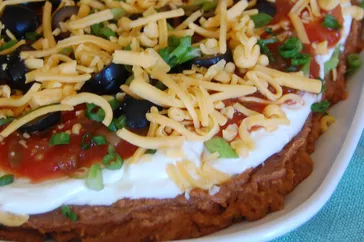

Description
This taco dip is always a big hit at parties and
family get-togethers. People gather around the
platter until it's gone!
Ingredients
- 1 (16 ounce) can refried beans
- 1 (1 ounce) package taco seasoning mix
- 1 (16 ounce) container sour cream
- 1 (8 ounce) package cream cheese, softened
- 1 (16 ounce) jar salsa
- 1 large tomato, chopped
- 1 medium green bell pepper, chopped
- 1 bunch chopped green onions/li>
- 1 small head iceberg lettuce, shredded
- 2 cups shredded Cheddar cheese
- 1 (6 ounce) can sliced black olives, drained